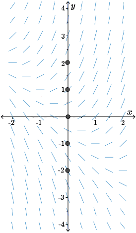

O estudo sobre as equações diferenciais ordinárias iniciou-se no final do século XVII através de mecanismos do Cálculo Diferencial e Integral desenvolvidos por Gottfried Wilhelm Leibniz (1646-1716), Isaac Newton (1642-1727) e Pierre de Fermat (1601-1665), e há muito tempo esses tipos de equações modelam e resolvem problemas diversos no ramo da Biologia, Matemática, Física, Economia, Engenharia, mas suas soluções não eram tão fáceis.
Uma equação diferencial é uma relação que se dá entre uma função e suas derivadas. Formalmente, uma equação diferencial contém as derivadas ou diferenciais de uma ou mais variáveis dependentes, em relação a uma ou mais variáveis independentes. A função, comumente conhecida como $y$, é vista como variável dependente, enquanto a variável $t$ é denominada como variável independente. As derivadas ordinárias podem ser escritas como $\dfrac{dy}{dt},\dfrac{d^2y}{dt^2}, \dfrac{d^3y}{dt^3}, ...$ ou $y', y'', y''',...$. São modelos de equações diferenciais as seguintes equações:
Resolver uma equação diferencial baseia-se em encontrar uma função que satisfaça a relação entre a função e suas derivadas na equação. Uma definição formal é que para qualquer função $\large \phi$ definida em um intervalo $I$ e que possua $n$ derivadas contínuas nesse mesmo intervalo $I$, ao substituirmos essas derivadas em uma equação diferencial de enésima ordem, nós conseguimos reduzi-la a uma equação identidade. Uma maneira para verificar que uma função dada é uma solução para a equação diferencial é examinar se cada membro da equação tornam-se iguais após a função fornecida ser substituída nessa equação. No exemplo a seguir, vamos verificar se a função fornecida é solução para a equação diferencial dada.
Para resolvemos primeiro precisamos encontrar a segunda derivada da função $y$, logo:
Como ${y'' +y=\cos(2t)}$, ao substituir, teremos:
Dessa forma, como encontramos a igualdade $\cos(2t)=\cos(2t)$, a função $y(t)$ é uma solução da equação diferencial que foi fornecida.
As soluções das equações diferenciais são divididas em soluções explícitas e implícitas. Podemos ter uma solução explícita quando a variável dependente é expressa apenas em termos da variável independente. Já na solução implícita, dada uma equação diferencial em um intervalo $I$, tem que existir pelo menos uma função que satisfaça a relação nessa intervalo.
São equações que envolvem apenas derivadas ordinárias de uma ou mais variáveis dependentes em relação a uma única variável independente. A representação de uma equação diferencial ordinária é expressa da seguinte forma:
São equações que envolvem duas ou mais variáveis independentes $(x,y,z,t...)$ e derivadas parciais de uma função (variável dependente) $u=u(x,y,z,t...)$. Assim sendo, uma EDP em $n$ variáveis independentes $x_1, x_2, \cdots,x_n$ é uma equação que tem o seguinte formato:
\[ F\biggr(x_1,x_2,\cdots,x_n,u,\frac{\partial u}{\partial x_1},\cdots,\frac{\partial u}{\partial x_n}, \frac{\partial^2 u}{\partial x_1^2},\cdots,\frac{\partial^2 u}{\partial x_1 \partial x_n},\cdots,\frac{\partial^ku}{\partial x_n^k}\biggr)=0\]
Podemos definir que a ordem de uma equação diferencial é a ordem da derivada de maior grau que aparece na equação e pode ser representada como \[F(t, y, y', y'', y''', \cdots,y^{(n)})=0,\] em que $F$ é uma função de $t$, $y$ e suas derivadas $y', y'',\cdots,y^{(n)}$.
Uma EDO é chamada de linear se $F$ é uma função linear das variáveis $y, y', y'',\cdots,y^{(n)}$ e sua forma geral é
A equação acima é linear pois pode ser representada como representamos em $(1)$.
A equação acima é não-linear pois envolve o produto $yy'$.
Um sistema de equações diferenciais ordinárias envolve duas ou mais funções desconhecidas, mas todas dependem da mesma variável $t$. Um exemplo é uma equação diferencial que modela uma única população em um ambiente. Se caso chegar outra espécie interagindo e até mesmo competindo no mesmo ambiente, então um modelo que represente a população $x(t)$ e $y(t)$ pode ser representado através de um sistema de equações diferenciais cuja representação é
Uma equação linear de primeira ordem pode ser representada, em geral, como: \[y'+p(t)y=g(t), \tag{2}\] em que $f$ e $g$ são funções de $t$ e assumimos que elas são contínuas em um intervalo $\alpha < t< \beta$. Dessa forma, resolver $(2)$ é encontrar funções diferenciáveis que a satisfazem para valores de $t$ em um determinado intervalo. É importante lembrar que uma equação linear não pode envolver nenhum termo não linear (como $yy'$, $y^3$ ou $\sin^2(y')$.
A equação diferencial que puder ser escrita na seguinte forma \[ y'+p(t)y=g(t)y^n, \quad n\in \mathbb{R} \tag{2.1}\] é chamada de equação diferencial de Bernoulli. Se $n=0$ ou $n=1$, a equação $(2.1)$ é linear, do contrário ela é não-linear. Para determinarmos uma solução geral para uma equação de Bernoulli, teremos que fazer a seguinte mudança de variável: \[u(t)=y^{1-n} \tag{2.2}.\] Se aplicarmos a derivação implícita na equação $(2.2)$, iremos obter: \begin{align*} u'&=(1-n)\cdot y^{1-n-1}\cdot y' \\ u'&=(1-n)\cdot y^{-n}\cdot y' \tag{2.3} \end{align*} Agora, se nós isolarmos $y'$ em $(2.1)$, nós teremos: \[y'=g(t)y^n-p(t)y. \tag{2.4}\] Com isso, basta substituir $y'$ em $(2.3)$, logo:
Uma equação do tipo $(2)$ poderá ser resolvida de maneira direta se pudermos, através de algumas manipulações, expressar o lado esquerdo da equação como uma derivada de um termo único, o que poderá ser encontrado pela multiplicação da equação por um fator apropriado. Para isso, nós realizamos a multiplicação da equação $(2)$ por uma função $\mu(t)$, que resultará em
Resolva a seguinte equação diferencial $y'-3y=0$
Se nós compararmos a equação acima com a equação $(2)$, temos que $p(t) = -3$. Como nosso fator de integração é dado por $e^{\int{p(t)}\,dt}$, basta substituirmos $p(t)$, logo: \begin{align*} \mu(t) &= e^{\int{p(t)}dt} \\ \mu(t)&=e^{\int{-3}\ dt} \\ \mu(t)&=e^{-3t+C_1}\end{align*} Como em $(10)$ admitimos que a constante pode ser tomada igual a zero, temos que $C_1=0$, assim: \begin{align*}\mu(t)&=e^{-3t+C_1} \\ \mu(t)&=e^{-3t+0} \\ \mu(t)&=e^{-3t} \end{align*} Dessa forma, como devemos multiplicar o fator integrante em ambos os membros da equação que foi fornecida, teremos: \begin{align*}e^{-3t}\cdot y'-3y\cdot e^{-3t}&=e^{-3t}\cdot 0 \\ e^{-3t}\cdot y' -3e^{-3t}y&=0 \end{align*} Como também já admitimos em $(12) $ que todo o primeiro membro da nossa equação será igual a derivada de um produto, ficaremos com a seguinte equação: \[\frac{d}{dt}[e^{-3t}\cdot y]=0\] Integrando a equação acima em ambos os lados: \begin{align*} \int{\frac{d}{dt}[e^{-3t}\cdot y]\ dt}&=\int{0} \ dt \\ e^{-3t}\cdot y&=0+C_2\\ e^{-3t}\cdot y&=C_2 \\y&=\frac{C_2}{e^{-3t}} \\ y&=e^{3t}\cdot C_2 \end{align*} Portanto, temos que a solução para $y'-3y=0$ é igual a $e^{-3t}\cdot y=C_2$ ou $y=e^{3t}\cdot C_2$.
Ao resolvermos uma equação diferencial nós podemos encontrar um conjunto de soluções o qual chamamos de solução geral. Nesse sentido, para encontrarmos a solução particular de uma de uma equação diferencial, nós teremos que tomar como base uma condição inicial dessa equação, ou seja, quando $y(t_0)=y_0$. Dessa forma, se conhecermos algumas condições do problema, nós podemos determinar as soluções particulares para a equação diferencial que foi fornecida.